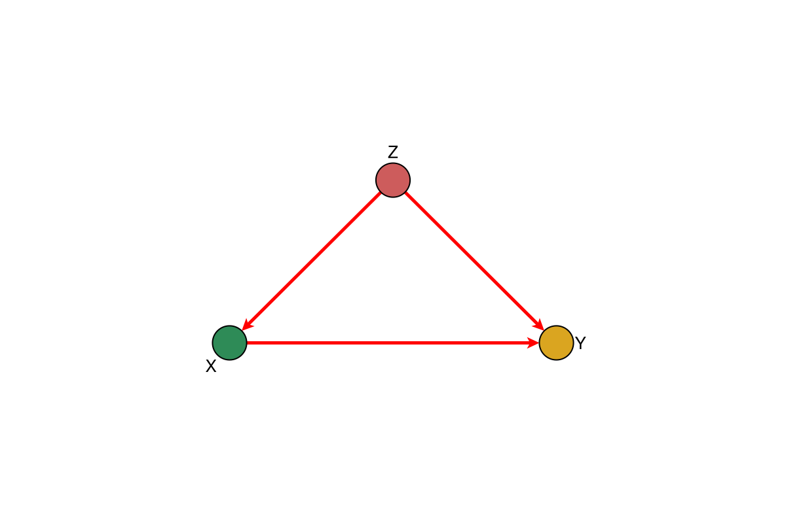
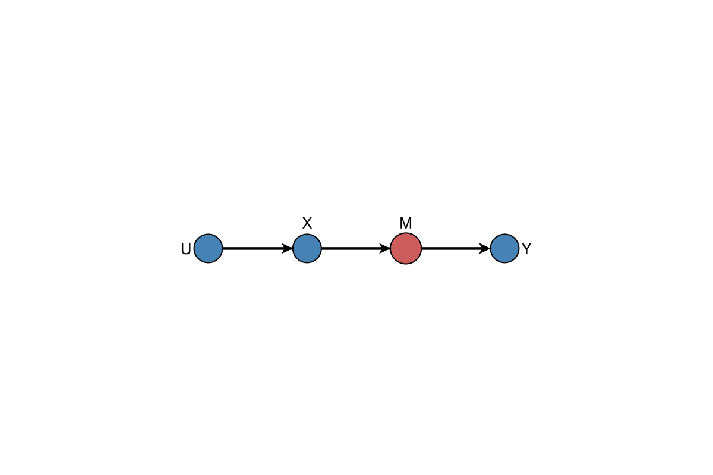

Examples
Basic Graph Operations
d-Separation
using CausalDynamics, Graphs, DAGMakie, CairoMakie
# Create a graph: Z → X → Y, Z → Y
g = DiGraph(3)
add_edge!(g, 1, 2) # Z → X
add_edge!(g, 1, 3) # Z → Y
add_edge!(g, 2, 3) # X → Y
# X and Y are not d-separated by Z: the direct X → Y path remains open.
d_separated(g, 2, 3, [1]) # falsefalseConditioning on Z blocks the backdoor path X ← Z → Y but does not block the causal path X → Y. The backdoor criterion below requires blocking the former, not d-separating X and Y in the original DAG.
Ancestors and Descendants
# Get ancestors of a node
ancestors = get_ancestors(g, 3) # {1, 2}
# Get descendants of a node
descendants = get_descendants(g, 1) # {2, 3}Set{Int64} with 2 elements:
3
2Identification
Backdoor Criterion
# Find backdoor adjustment set
adj_set = backdoor_adjustment_set(g, 2, 3) # Set([1])
# Check if backdoor adjustment is possible
is_backdoor_adjustable(g, 2, 3) # true
fig = plot_backdoor_paths(g, 2, 3; node_labels = ["Z", "X", "Y"])
fig
Frontdoor Criterion
using CausalDynamics, Graphs, DAGMakie, CairoMakie
# Frontdoor example: U → X → M → Y, U → Y
g_frontdoor = DiGraph(4)
add_edge!(g_frontdoor, 1, 2) # U → X
add_edge!(g_frontdoor, 1, 4) # U → Y
add_edge!(g_frontdoor, 2, 3) # X → M
add_edge!(g_frontdoor, 3, 4) # M → Y
# Find frontdoor mediator sets (each set is a valid Z)
mediator_sets = find_frontdoor_mediators(g_frontdoor, 2, 4) # [Set([3])]
mediator_nodes = reduce(union, mediator_sets; init = Set{Int}())
fig = plot_causal_graph(
g_frontdoor;
node_labels = ["U", "X", "M", "Y"],
highlight_nodes = mediator_nodes,
)
fig
Instrumental variables (unmeasured confounding)
When an unmeasured confounder U affects both exposure A and outcome Y, no backdoor adjustment set over the observed variables exists. A variable Z that shifts A without directly affecting Y (such as randomised treatment encouragement or a Mendelian genetic variant) is a valid instrumental variable (Pearl, 2009; Imbens & Rubin, 2015).
using CausalDynamics, Graphs
# 1=Z (encouragement), 2=U (unmeasured quality), 3=A (parasite load), 4=Y (survival)
g_iv = DiGraph(4)
add_edge!(g_iv, 1, 3) # Z → A
add_edge!(g_iv, 2, 3) # U → A
add_edge!(g_iv, 2, 4) # U → Y
add_edge!(g_iv, 3, 4) # A → Y
(
instruments = find_instruments(g_iv, 3, 4),
z_is_valid = is_valid_instrument(g_iv, 1, 3, 4),
u_is_valid = is_valid_instrument(g_iv, 2, 3, 4),
)(instruments = [1], z_is_valid = true, u_is_valid = false)Cross-site transportability (TransportQuery)
To transport a causal effect from one study site or population to another when covariate distributions differ across sites (marked by a domain variable S affecting W), use TransportQuery (Bareinboim & Pearl, 2016):
using CausalDynamics, Graphs
# 1=S (site / selection), 2=W (age), 3=A (exposure), 4=Y (survival)
g_tr = DiGraph(4)
add_edge!(g_tr, 1, 2) # S → W (age structure differs by site)
add_edge!(g_tr, 2, 3) # W → A
add_edge!(g_tr, 2, 4) # W → Y
add_edge!(g_tr, 3, 4) # A → Y
names_tr = Dict(1 => :S, 2 => :W, 3 => :A, 4 => :Y)
id_tr = identify(
g_tr,
TransportQuery(:A, :Y, [:S]; source = :site_a, target = :site_b);
node_names = names_tr,
)
(identifiable = id_tr.identifiable, strategy = id_tr.strategy, adjust = id_tr.adjustment)(identifiable = true, strategy = :transport_backdoor, adjust = [:W, :S])SCM Framework
Static GraphSCM, colliders, and counterfactuals
A GraphSCM binds structural equations to a DAG so you can simulate data under observational conditions or interventions (do_intervention) and compute individual counterfactuals holding exogenous noise U constant (Pearl, 2009; Cinelli, Forney & Pearl, 2024).
using CausalDynamics, Graphs
# 1=W (age), 2=A (infection), 3=Y (survival score), 4=C (trap capture, collider)
g_scm = DiGraph(4)
add_edge!(g_scm, 1, 2); add_edge!(g_scm, 1, 3)
add_edge!(g_scm, 2, 3)
add_edge!(g_scm, 2, 4); add_edge!(g_scm, 3, 4) # A → C ← Y
# Confirm C is excluded from the backdoor adjustment set for A → Y
adj = backdoor_adjustment_set(g_scm, 2, 3)
equations = Dict(
1 => (u) -> u,
2 => (w, u) -> 0.5 * w + u,
3 => (w, a, u) -> -1.2 * a + 0.8 * w + u,
4 => (a, y, u) -> 0.6 * a - 0.5 * y + u,
)
scm = GraphSCM(g_scm, equations, Set([1]))
# Individual counterfactual: what if this animal's infection A were set to 0.0?
U = Dict(1 => 1.0, 2 => 0.8, 3 => -0.2, 4 => 0.1)
cf = compute_counterfactual(scm, do_intervention(2, 0.0), U)
(
adjust_nodes = adj,
factual_A = round(cf.factual[2]; digits = 2),
factual_Y = round(cf.factual[3]; digits = 2),
cf_Y_under_do0 = round(cf.counterfactual[3]; digits = 2),
)(adjust_nodes = Set([1]), factual_A = 1.3, factual_Y = -0.96, cf_Y_under_do0 = 0.6)Discrete-time CDM
Trajectories, counterfactuals, policies, and g-computation
A DiscreteTimeCDM models systems whose state evolves across discrete occasions with feedback (Robins, 1986; Hernán & Robins, 2020). Beyond predetermined DoSequence interventions, policy defines a state-dependent rule (for example, treating an animal only when its load exceeds a threshold) and g_computation estimates the resulting interventional mean by Monte Carlo.
using CausalDynamics, Random
cdm = DiscreteTimeCDM(
[:load, :treat, :cond];
initialise = (rng) -> (load = 1.0, treat = 0.0, cond = 0.0),
sample_noise = (rng, state, t) -> (
u_l = 0.3 * randn(rng),
u_t = 0.2 * randn(rng),
u_c = 0.3 * randn(rng),
),
step = (state, t, noise, intervention) -> begin
nat_treat = state.load > 1.2 ? 1.0 : 0.0
treat = intervention_value(intervention, :treat, t, nat_treat, state)
load = max(0.0, 0.8 * state.load - 0.5 * treat + 0.4 + noise.u_l)
cond = 0.6 * state.cond - 0.4 * load + noise.u_c
(load = load, treat = treat, cond = cond)
end,
)
T = 6
factual = simulate(cdm, T; rng = Random.Xoshiro(1))
cf = counterfactual(cdm, factual.noise; intervention = do_sequence(:treat, fill(1.0, T)))
# Compare never-treat vs threshold policy via Monte Carlo g-computation
pol_never = do_sequence(:treat, fill(0.0, T))
pol_thresh = policy(:treat, (state, t) -> state.load > 0.8 ? 1.0 : 0.0)
g_never = g_computation(cdm, T, :cond; intervention = pol_never, n = 200, rng = Random.Xoshiro(2))
g_thresh = g_computation(cdm, T, :cond; intervention = pol_thresh, n = 200, rng = Random.Xoshiro(2))
(
factual_end_cond = round(factual.series[:cond][end]; digits = 2),
cf_always_treat = round(cf.series[:cond][end]; digits = 2),
mean_never_treat = round(g_never.mean; digits = 2),
mean_threshold_policy = round(g_thresh.mean; digits = 2),
)(factual_end_cond = -1.0, cf_always_treat = -0.55, mean_never_treat = -1.39, mean_threshold_policy = -0.67)Latent-to-observed bridge (ObservationBridge)
When a biological state (such as true parasite burden load) is measured indirectly or with delay (for example, a lab assay assay reported one step later), ObservationBridge maps latent trajectories onto observed panel columns and tracks decision-time availability (available_at):
bridge = ObservationBridge(
Dict(:load => :assay, :treat => :treat, :cond => :cond);
measure = (st, t) -> (assay = round(st.load; digits = 2), treat = st.treat, cond = st.cond),
availability = Dict(:assay => 2, :treat => 1, :cond => 1),
)
panel = simulate_observed_panel(
cdm, 20, 3;
bridge = bridge,
timed = [:assay, :treat],
terminal = [:cond],
rng = Random.Xoshiro(3),
)
(
assay_avail_t1 = available_at(bridge, :assay, 1),
assay_avail_t2 = available_at(bridge, :assay, 2),
panel_columns = panel.column_order,
)(assay_avail_t1 = false, assay_avail_t2 = true, panel_columns = [:assay1, :treat1, :assay2, :treat2, :assay3, :treat3, :cond])The CDCS book Chapter 28 works the confounded protein / treatment example with this API.
For more examples, see the package's examples/ directory, Getting Started, Hierarchical / nested units, Missingness, and References. For DAG layout and theming beyond these façades, see DAGMakie.jl.